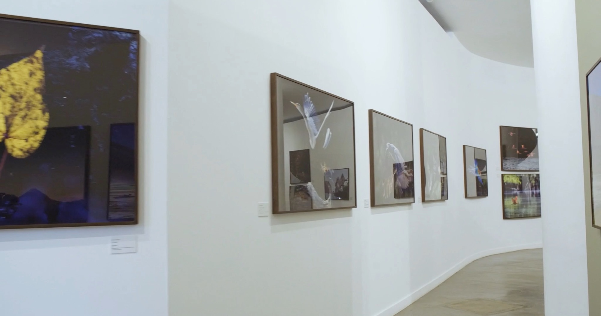
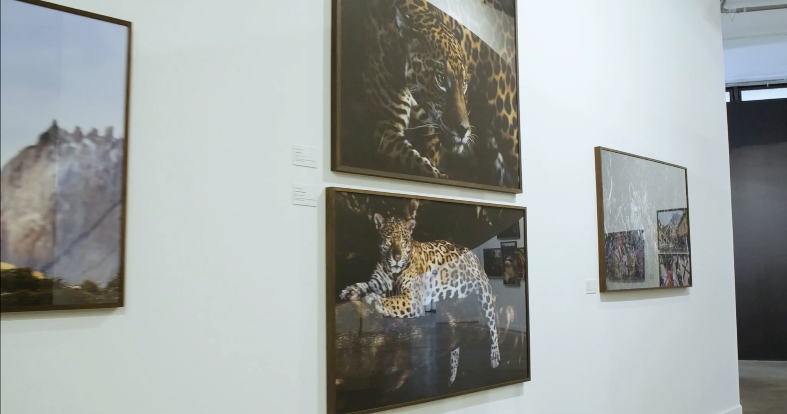
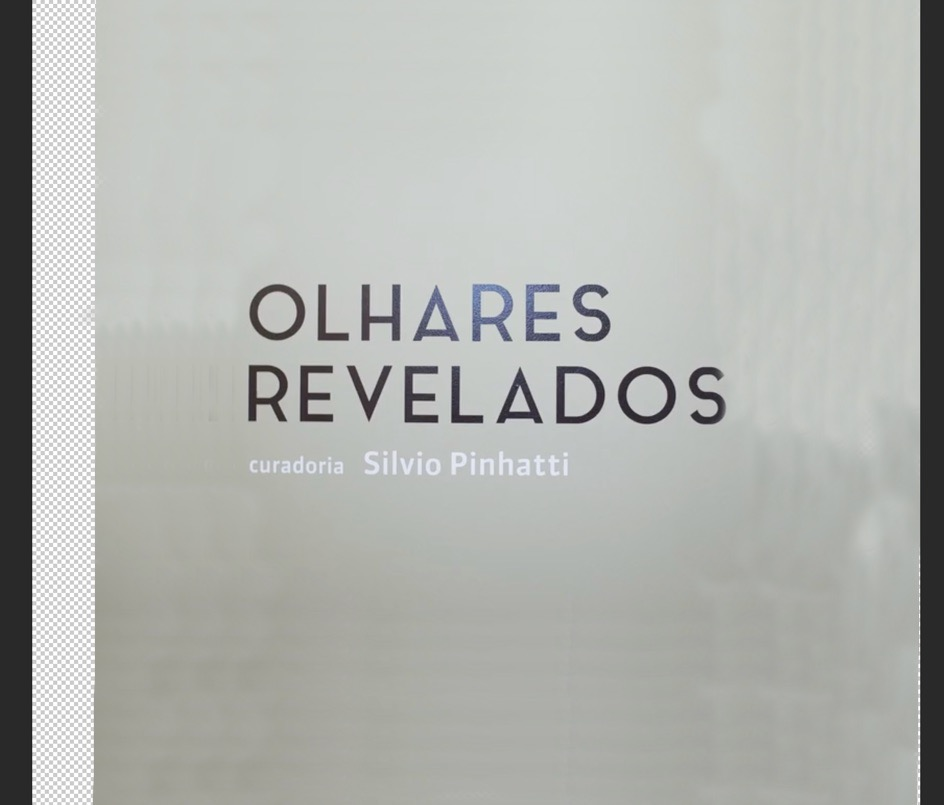

museu afro brasil · parque ibirapuera, são paulo
Olhares Revelados
Exposição coletiva de doze fotógrafos, realizada pelo Laboratório Silvio Pinhatti em parceria com o Museu Afro Brasil, no Parque Ibirapuera.
Paulo participou com a série Natureza e Vida Selvagem, em cópias de grande formato (100 × 150 cm), que também integram o catálogo da mostra.
“Paulo Behar pretende registrar as belezas da natureza e da vida selvagem, com um olhar que busca impactar e emocionar o espectador.”Silvio Pinhatti, curador


